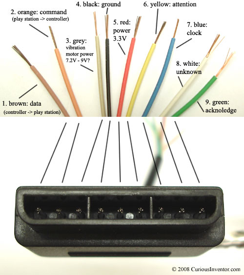

December 6, 2020
This document will detail the interface used by the PlayStation 2 to communicate with the DualShock 2 controllers, as well as examples for using the adrian::PS2 software interface.
The DualShock controller consists of several different kinds of inputs:
Based on the configuration, the 12 main buttons can be either simple on/off buttons or fully pressure-sensitive analog inputs. Start, select, and L3/R3 (joystick buttons) are digital-only.
The analog joysticks both sit on a two-axis grid and report their position as a pair of X-Y coordinates.
The controller also has two motors, one larger in the left and one smaller on the right, that can be used for vibration feedback.
There are nine pins on the DualShock connector, of which only eight are used. The pins are as follows, from left to right on the male side:

The PlayStation 2 uses a modified version of the SPI protocol to communicate with the controller. This protocol is discussed more in-depth in the Data Layer section.
SPI uses four pins: two data pins (MISO and MOSI), a clock pin, and a select pin.
The brown data wire is the equivalent of the MISO pin in SPI. This pin is used to transfer data from the controller to the console. It is an open-collector output, so it requires a pull-up resistor of about 1k to 10k Ohms.
The orange command wire is the equivalent of the MOSI pin in SPI. This pin is used by the console to send commands to the controller, e.g. to request button data.
The blue clock wire is the equivalent of the SPI clock pin. Officially the speed of this clock is 500kHz, but I have found that 250kHz is more reliable, especially with 3rd-party controllers.
The yellow attention wire is the equivalent of the select pin in SPI. It should float high when not in use and be pulled low before each data transfer, then released high again.
Additionally, the green acknowledge wire is an output from the controller which verifies that it is connected and transmitting properly. If you are interfacing with a controller, you have the option to check this pin or not (I generally do not). However, you must provide this output if you plan to interface with the PlayStation 2 console as it requires this pin to behave properly.
The red power line is officially 5V but it works easily at 3.3V and should work anywhere between 3-5V.
The gray power line which powers the vibration motors is listed as 9V but can work as low as 5V. The power of the vibration scales with the voltage (high voltage = more vibration). However, the motors can draw 500mA or more, so be careful about the power source.
The communication protocol used by the PS2 is a modified form of SPI with a custom data protocol. SPI is full-duplex, meaning the console sends commands to the controller and gets the response within the same transaction.
The general format for a transation goes like this:
The PS2 console pulls the select pin low to indicate it is starting a transaction.
The console then sends a 3-byte header, and in the same bytes the controller sends a 3-byte reponse indicating the current configuration state.
The console then sends 2 bytes indicating the vibration level, and the console sends the digital button states.
Depending on the configuration, the controller will then send up to 16 additional bytes with the joystick and analog button data.
When the controller is first plugged in it defaults to digital mode and transmits only the digital button data.
| Byte # | 1 | 2 | 3 | 4 | 5 |
|---|---|---|---|---|---|
| Command (hex) | 0x01 | 0x42 | 0x00 | 0x00 | 0x00 |
| Data (hex) | 0xFF | 0x41 | 0x5A | 0xFF | 0xFF |
| Section | H | H | H | D | D |
The first 3 bytes sent from the console are the header (section H).
Console always sends 0x01
Controller always sends 0xFF
Console sends command type, in this case 0x42
Controller sends current device mode, in this case 0x41
Console always sends 0x00
Controller always sends 0x5A
After the header comes the data section, which can be between 2 and 18 bytes. In the default digital mode, this consists of 2 bytes which are the vibration commands, where a higher number means stronger vibration.
TODO
The basic functionality for using the DualShock controller in your embedded projects is wrapped in the adrian::DualShock class. This interface is designed to be easily extendable to any project - simply implement the proper interfaces and you can connect to the controller and read data.
You will need to implement:
adrian::SPI
adrian::GPIO
Note: Implementations for these classes are already available for Arduino-based platforms.
Example of using the DualShock class:
class MySPI : public adrian::SPI { /* implementation goes here */};
class MyGPIO : public adrian::GPIO { /* implementation goes here */};
main()
{
// Initialization
MySPI spi_impl;
MyGPIO select_pin;
spi_impl.Initialize();
adrian::DualShock ps2_controller(&spi_impl, &select_pin);
// Get button data
adrian::DualShock::ButtonState buttons;
ps2_controller.Poll(buttons);
}Here is a simplified version of the DualShock class:
/** Represents a DualShock controller. */
class DualShock
{
public:
DualShock(SPI* const spi_interface);
// Connect and disconnect the controller.
bool Connect();
bool Disconnect();
bool IsConnected() const;
// Ask the controller for button info and
// send rumble commands.
void Poll(ButtonState& current_button_states);
void Poll(uint8_t left_rumble,
uint8_t right_rumble,
ButtonState& current_button_states);
// Turn on/off analog mode (required to get joystick data)
bool EnableAnalog();
bool DisableAnalog();
};Constructor
DualShock(spi_interface) - Create a DualShock object and pass in a pointer to a valid SPI interface.Connecting
bool Connect() - Connect to the controller. Returns true if connection succeeded, otherwise false.
bool Disconnect() - Disconnect from the controller.
bool IsConnected() - Check if the controller is properly connected.
Polling
void Poll(buttons) - Grab the input data from the controller and copy it into the buttons object.
void Poll(left_rumble, right_rumble, buttons) - Grab the input data from the controller, and send the controller a command to activate the rumble motors.
Configuration
bool EnableAnalog() - Turn on analog mode (required for joysticks).
bool DisableAnalog() - Turn off analog mode.
Below is a complete example of using the DualShock class with an Arduino Uno. In this example, pressing X on the controller will cause an external LED to light up.
// mysketch.ino
#include "embedded_tools/spi/adrian_spi_arduino.hpp"
#include "embedded_tools/ps2/adrian_dualshock.hpp"
// Globals
static adrian::ArduinoSPI spi;
static adrian::ArduinoGPIO select_pin(10);
static adrian::ArduinoGPIO led(9);
static adrian::DualShock ps2_controller(&spi_impl, &select_pin);
static adrian::DualShock::ButtonState buttons;
setup()
{
spi.Initialize();
led.SetPinMode(adrian::GPIO::PM_OUTPUT);
led.Write(0);
}
loop()
{
// Poll the controller for the button status.
ps2_controller.Poll(buttons);
// If the X button is pressed, light up the LED.
led.Write((buttons.digital_valid && buttons.cross));
delay(100);
}This data was collected over time from various sites, and I want to pay credit to those who have gone before me and did the hard work of reverse engineering the SPI protocols.
Curious Inventor - Interfacing a PS2 (PlayStation 2) Controller: http://store.curiousinventor.com/guides/PS2
SPI (Serial Peripheral Interface): https://en.wikipedia.org/wiki/Serial_Peripheral_Interface